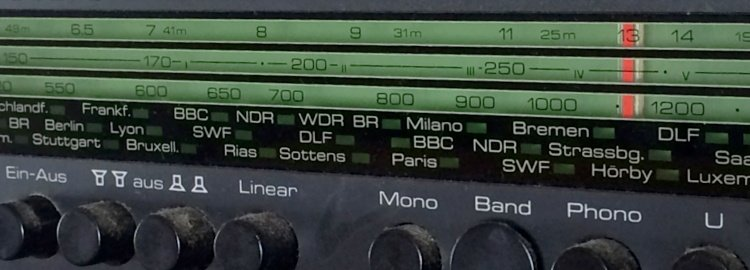

Auf dieser Website ist Platz für das, wofür mein Twitterprofil @charakterziffer nicht ausreicht. Mein Blog ist als Plus zu meinen Tweets gedacht, eben „@cz+“. // Die letzten drei Artikel:
Der Apostroph ( ’ griechisch: der Abgewandte) ist ein Satzzeichen, mit dem leider viel Schindluder getrieben wird. Oft wird damit das Mehrzahl-s abgetrennt (Auto’s, CD’s) oder das „s“ des Genitivs (Luise’s Studio, Bernd’s Werkstatt). Falsch ist der Apostroph auch bei Befehlsformen (Komm’ her! Geh’ weg!).
Dabei ist es gar nicht so schwer, denn eigentlich gibt es nur zwei Fälle, in denen der Apostroph zum Einsatz kommt.
Der Apostroph kennzeichnet Stellen, wo Buchstaben ausgelassen wurden. Beispiele: Hast du ’nen Euro? Heute ist’s kalt am Ku’damm, kälter als in M’Gladbach.
Der Apostroph verdeutlicht Eigennamen, wenn eine Endung dazukommt: Grimm’sche Märchen, Ohm’scher Widerstand. So hilft der Apostroph auch beim Genitiv, wenn andernfalls Namen unklar (!) wären: Andrea’s Freundin (nicht die von Andreas) – oder wenn Namen bereits auf einem S-Laut enden: Klaus’ Auto, Alex’ Fahrrad.
Ausführlich nachlesen kann man die Regeln zum Gebrauch des Apostrophs bei Belles Lettres oder auf Canoo.net. Übrigens findet sich das korrekte Apostroph-Zeichen nicht auf einer normalen Computertastatur. Wer typografisches Feingefühl an den Tag legen möchte, sollte auf ' oder ` verzichten. Siehe dazu auch den Artikel bei Typefacts.
Thematisch passend gibt es diesen Artikel auch zum Anhören:
„Gibt’s das heutzutage überhaupt noch? Und ist das nicht nur was für Kinder?“ – Die Fragen bekomme ich meistens gestellt, wenn ich davon erzähle, wie gerne ich Hörspiele höre.
Zum ersten: Ja, es gibt noch Hörspiele, und zwar eine ganz schöne Menge. Der deutschsprachige Rundfunk hat dafür pro Woche über fünfzig Sendeplätze reserviert. Eine gute Informationsquelle (weil senderübergreifend) ist hier die HörDat. Hinter der etwas nüchternen Weboberfläche steckt eine gut gepflegte Datenbank, mithilfe derer sich aktuelle Ausstrahlungstermine finden lassen. Ich wähle in der Suchmaske als Sendezeitraum meistens die kommende Woche und hake das Kästchen bei „alle Sender“ an. So bekomme ich einen guten Überblick und stelle mir mein Radioprogramm zusammen.
Eine ähnliche Übersicht bietet der Hörspielkalender der ARD. Zwar beschränkt er sich auf die ARD-Radiowellen, ist meinem Eindruck nach aber vollständiger und genauer. Trotzdem nutze ich diese Programmübersicht kaum, weil sie auf den ersten Blick zu wenige Informationen anzeigt. Ich habe keine Lust, mich für einen schnellen Überblick durch eine Liste aus Klappkästen zu klicken.
Eine dritte Möglichkeit, sich über laufende Hörspiele zu informieren, sind die entsprechenden Programmhefte einzelner Sender. Man kann sich die (in der Regel) halbjährlich erscheinenden Hefte oft sogar kostenlos zuschicken lassen oder als PDF herunterladen. Entsprechende Broschüren gibt es beispielsweise vom Deutschlandradio (PDF, 10 MB), vom Bayerischen Rundfunk oder dem SWR. Natürlich informieren die Sender zusätzlich auf ihren Internetseiten über ihr Hörspielangebot.
Breitgefächertes Hörspielangebot, auch zum Download
Wäre noch die zweite Frage zu klären, ob das nicht nur etwas für Kinder sei. Definitiv nicht. Es gibt sogar Hörspiele, die ganz sicher nicht für Kinder geeignet sind, zum Beispiel viele Produktionen von 1LIVE. Sie enthalten schon mal soviel Sex oder Gewalt, dass der Sendeplatz dienstags/donnerstags um 23 Uhr wirklich gerechtfertigt ist.
Allgemein ist das Hörspielprogramm deutschsprachiger Wellen sehr breit gefächert. Es gibt unter anderem heitere Mundarthörspiele (14-tägig samstags um 21:05 Uhr auf SWR4), atmosphärische oder schräge Klangkunst (freitags, 0:05 Uhr im Deutschlandradiokultur) und Trash- oder Action-Hörspiele (dienstags, 23 Uhr auf 1LIVE). Dazu natürlich Krimis (samstags, 17:05 Uhr im WDR5), experimentelle Hörspiele (freitags, 21:05 in Bayern2), Kindergeschichten (sonntags, 8:05 Uhr im Deutschlandradiokultur), Literaturbearbeitungen sowie Kurzhörspiele (werktäglich um 13:10 Uhr, MDR Figaro) … Das sind natürlich nur einige Beispiele.

Und wer „einfach keine Zeit zum Radiohören“ hat, kann viele Hörspiele mittlerweile für eine Woche oder länger online nachhören oder sogar herunterladen. Der Bayerische Rundfunk ist da ein großer Vorreiter und stellt (soweit ich weiß) alle Neuproduktionen zum Download in seinen Hörspielpool – größtenteils etwas sperrige (=anspruchsvolle?) Kost. Auch bei 1LIVE (Krimis, Soundstories) oder dem Schweizer Radio und Fernsehen kann man viele Sendungen finden. Wer Krimis mag, könnte am monatlichen Radiotatort Interesse haben (die Qualität ist so gemischt wie beim Fernsehtatort, mit Perlen und Mist). Die Nachhör-/Download-Angebote aller ARD-Wellen trägt (etwas unübersichtlich) die ARD-Mediathek zusammen. Eine weitere senderübergreifende Übersicht von Download-Hörspielen bietet die Website Radio Today.
Persönliche Tipps
Was ich gerne höre sind unter anderem ältere, klassisch erzählte Krimis, zum Beispiel die Geschichten um Professor van Dusen. Aus urheberrechtlichen Gründen gibt es diese Hörspiele nicht im Internet. Aber einige andere stehen online, zumindest eine Zeitlang. Hier ein paar Empfehlungen:
Action, spannende Wendungen und eine (teils absurde) Geschichte: The Cruise ist ein achtteiliges Hörspiel, in dem sich eine Gruppe Menschen plötzlich allein auf einem riesigen Luxusdampfer wiederfindet. Tolle Sprecher, ziemlich geiles Sounddesign.
Leider kann man „Gras wachsen hören“ nicht mehr nachhören. Aber das Stück über ein fiktives Pflanzeninstitut läuft wieder am Sonntag, den 21. Februar 2016, um 21 Uhr auf NDR Info (zukünftige Sendetermine auf liquidpenguin.de). Die Wartezeit bis dahin könnte man mit Ickelsamers Alphabet vom gleichen Autorenteam überbrücken [Nachtrag 9.1.2016: Hörspiel nicht mehr online].
Der Atlas der abgelegenen Inseln ist eine Hörspielinszenierung des gleichnamigen Buchs von Judith Schalanski. Teils poetisch, skurril, schön komponiert.
Ein klassischer Krimi im Sport-Milieu ist Tod eines Fußballers. Ein bisschen durchsichtiges Mordmotiv, aber die Ermittlungsarbeit ist unterhaltsam.
Kein Hörspiel sondern ein sehr spannendes Feature ist Ouri Jallouh. Es untersucht den Todesfall eines Asylbewerbers, der gefesselt in einer Polizeizelle verbrannt ist. Gut recherchiert, sehr gut erzählt.
Wie ist eure Erfahrung mit Hörspielen? Habt ihr Empfehlungen, vielleicht auch für Podcasts? Kennt ihr noch gute Webangebote zu Hörspielen? Ich freue mich über Kommentare!
In Radiospots tauchen hinter einer Produktbezeichnung oder einem Firmennamen sehr oft kleine Ergänzungen auf, zum Beispiel:
„Diese Sendung wird präsentiert von Rundmüller, Ihr(em) exklusiver/n Autohändler.“
„Das gibt’s auf der Regensburger Bildungsmesse – die/der Arbeits- und Ausbildungsbörse.“
Die Ergänzungen haben immer ein Bezugswort, das sie näher bestimmen (im Beispiel kursiv). Es handelt sich dabei aber nicht um Relativsätze (denn ihnen fehlt das Verb), sondern um eine Apposition („Beisatz“).
Manchmal ist nicht ganz klar, in welchem Kasus (grammatischen Fall) so eine Apposition stehen soll. Auch bei den obigen Beispielen habe ich ja zwei Möglichkeiten genannt. Die erste davon (der Nominativ) klingt dem Sprachgefühl nach viel unmittelbarer und deutlicher. Standardsprachlich korrekt muss eine Apposition aber immer im gleichen Fall stehen wie das Bezugswort („kongruenter Kasus“):
„Entdecken Sie die Vorteile der Putzfee, des Reinigers für Profis.“ (Genitiv)
„Unterstützt von Pizzabräter, dem italienischen Essens-Innovateur.“ (Dativ)
„Holen Sie sich das Modell 601, den besten Trabant aller Zeiten.“ (Akkusativ)
Das schreibt sich sehr einfach, wenn man zum Testen das Bezugswort einfach mal weglässt: „Holen Sie sich […] den besten Trabant aller Zeiten.“
Wo ein anderer Kasus erlaubt ist
In der Standardsprache gibt nur zwei Ausnahmen, bei denen Bezugswort und Apposition einen unterschiedlichen Fall haben („inkongruenter Kasus“): Erstens wenn die Apposition zwar ein gebeugtes Adjektiv aber kein Artikelwort (der, ein, Ihre, dieser, keine, …) besitzt:
„Ab zum Bauermann, stadtbestes Modegeschäft.“ (selten: stadtbesten Modegeschäft)
Und zweitens wenn weder Artikel noch Adjektiv vorkommen. Die Apposition steht dann im Nominativ:
„Das Design eines Holzmüllers, Künstler von Welt.“ (nicht: Künstlers von Welt)
Und jetzt?
Ein Argument für falsche Grammatik
Wie erkläre ich meinem (Werbe-)Kunden, dass es sich aber besser anhört, wenn es grammatikalisch falsch ist? Man könnte auftrumpfen mit: Natürlich sollten Bezugswort und Apposition standardsprachlich im Kasus kongruent sein. In der gesprochenen Sprache empfiehlt sich hier aber der Nominativ, weil die Apposition dadurch unmittelbarer und deutlicher wirkt und eben nicht nur eine bloße, eher unwichtige Beifügung zu Ihrem Produkt-/Marken-/Firmennamen.
Als Werbetexter macht man grammatikalisch ja oft krude Sachen (unvollständige Sätze, Wortneuschöpfungen, …), aber keine Sorge: Zwar ist Sprachverhunzung natürlich streng verboten, aber kreativ mit der Sprache zu spielen ist sogar eine Pflicht – vor allem wenn eine Aussage dadurch deutlicher wird. Man muss halt nur wissen, was man tut – und es gut begründen können.
Das Wort kombiniert Persönlichkeit (Charakter) mit Sachlichem (Ziffer). Zusammengesetzt ergibt sich ein Synonym für Mediävalziffer, eine Zahlenvariante mit Ober- und Unterlängen.
Schriftarten dieses Blogs
Wenn dein Browser eingebettete Schriften (WOFF/TTF) unterstützt, dann liest du die Fließtexte hier in der Source Sans Pro von Paul D. Hunt, erschienen 2012 bei Adobe.
Die Überschriften sind aus der Bitter von Sol Matas gesetzt, die der argentinische Schriftverlag Huerta Tipográfica 2011 veröffentlicht hat.
§1 Die Verwendung meiner Kontaktdaten zur gewerblichen Werbung ist ausdrücklich nicht erwünscht; ich widerspreche hiermit jeder kommerziellen Verwendung und Weitergabe meiner Daten. // Private Fanpost ist allerdings sehr willkommen!
§2 Dieses Blog verlinkt auf Websites Dritter („externe Links“). Zum Zeitpunkt der erstmaligen Verlinkung waren dort keine Rechtsverstöße ersichtlich. Da ich keinen Einfluss auf fremde Websites habe, kann ich für deren Inhalte und Gestaltung keine Haftung übernehmen. Sollte ich von Rechtsverstößen erfahren, entferne ich die Verlinkung unverzüglich. Eine ständige Kontrolle der externen Links ist ohne konkrete Hinweise aber nicht zumutbar.